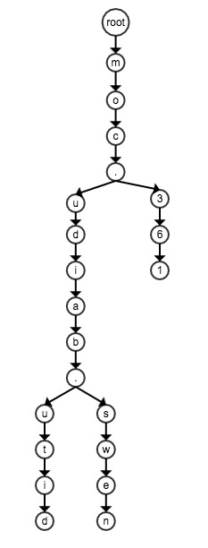

Trie搜索树的应用
更新日期:
最近在折腾一个代理的App，要实现一个根据域名来决定是否走代理的功能。实现的思路很简单，获取被墙屏蔽的域名列表，根据这个列表来判断是否需要走代理。被屏蔽的域名列表github上有项目在维护（点击查看）。有了列表之后就可以通过编写Proxy auto-config告诉浏览器选择代理的规则。
###Proxy auto-config###
Proxy auto-config文件的内容其实就是一段JS代码。这段代码最重要的就是要实现一个函数：
FindProxyForURL(url, host)
{
if(host === somehost) {
return 'SOCKS5 127.0.0.1:1080';
} else {
return 'DIRECT';
}
}
上面的代码只是一个简单实例，不难理解，如果host等于somehost则使用SOCKS5代理，否则就不使用代理。
github上的genpac能够根据上面提到的屏蔽列表生成一个PAC文件。该项目生成的PAC文件的FindProxyForURL函数实现很直观，就是两个for循环，外层循环遍历域名列表，内层循环做域名的后缀匹配，如果跟列表中的域名有相同的后缀则使用代理，否则不使用代理，代码基本如下（经过我的加工）：
FindProxyForURL(url, host)
{
for(i = 0, i < domainList.length; i++) {
var domain = domainList[i];
var j = 0;
for(; j < host.length; j++) {
if(host[host.length - j - 1] != domain[domain.length - j - 1]) {
return 'DIRECT';
}
}
if(domain[j] === '.') {
return 'SOCKS5 127.0.0.1:1080';
} else {
return 'DIRECT';
}
}
}
假设host的长度为m，domainList的长度为n，则FindProxyForURL的时间复杂度为O(mn)，在最差的情况下即m等于n，则时间复杂度为O(n^2)。目前维护的屏蔽列表生成的域名大概有5000条，每次HTTP请求前都要做个几千次的字符串匹配，在PC端上也无所谓，但是在移动设备上想想都觉得蛋疼。
###使用Trie加速匹配###
trie读作try，是一种用于搜索的树状结构。使用域名作为key，我们来看一下trie的结构:

上图的trie是由ditu.baidu.com、news.baidu.com、163.com这几个域名构成，通过上图我们可以归纳trie的几个特点：
- 每个字符都是一个节点
- 公共子串共享节点
trie的搜索是很直观的，从根节点出发，一个节点一个节点匹配，遇到不匹配的节点就结束匹配，搜索失败，所有字符都匹配到了则搜索成功。可以看到使用trie来做域名匹配后，字符的比较次数只跟域名的长度相关，跟屏蔽列表的长度无关，假设匹配的域名长度为n，则时间复杂度为O(n)。
以下是针对域名匹配实现的trie的代码，由于没有删除更改需求就只实现了插入和查找。
域名的插入：
Trie.prototype.add = function(key, value) {
var i = 0;
var term = key.charAt(i);
var node = this.root;
while(term) {
var child = node.children[term];
if(!child) {
child = new TrieNode(term);
node.children[term] = child;
}
node = child;
term = key.charAt(++i);
}
node.value = value;
}
子节点的存储也可以使用排序数组，由于是JS代码就直接使用了字典。
域名的查找：
Trie.prototype.match = function(key) {
var i = 0;
var term = key.charAt(key.length - i - 1);
var node = this.root;
while(term) {
var child = node.children[term];
if(child) {
node = child;
term = key.charAt(key.length - (++i) - 1));
continue;
}
if(term === '.') {
return node.value;
} else {
return null;
}
}
return node.value;
}
###性能对比###
上面理论分析已经证明使用trie时间复杂度是大大的降低。下面我用实测数据来一个更直观的对比。genpac的实现的匹配速度是跟屏蔽列表的长度相关的，所以测试了匹配列表的第一项与最后一项的耗时。使用trie后理论上匹配只跟被匹配字符串的长度有关，为了对比也测试了匹配第一项与最后一项的耗时。
测试机配置mac 2.4 GHz Intel Core i7，第一项域名为4pppc.gov.tw，最后一项域名为zzux.com，下面是数据：
genpac生成的PAC代码耗时
匹配第一项：1402.212ns
匹配最后一项：282024.378ns
平均：141713.295ns
使用trie匹配耗时
匹配第一项：2809.283ns
匹配第后一项：1406.846ns
平均：2108.0645ns
运行数据跟理论是一致的，genpac生成的代码匹配速度是跟屏蔽列表相关的，所以最后一项的匹配耗时远远超过第一项匹配耗时。使用trie之后匹配速度是跟被匹配域名的长度相关，这里第一项域名比最后一项域名要长，所以耗时也比较多。但是从平均耗时来看trie的优势是一目了然的，差不多有70倍的速度提高。
如果对使用trie的PAC感兴趣可以点击本人的repo。
###再说点什么
在工作项目中有一个电话本的联系人匹配也用到了trie，这里就简单的讲一下思路。比如电话本中有这么一项：
姓名：小明
电话：13666382601
键盘是九宫格形式，要求输入姓名拼音首字母和电话的任一部分都能匹配到，连续输入匹配越精确。我的实现如下：
‘小明’姓名首字母为xm，对应到九宫格键盘上的数字为96，即以96来代表小明，将字母都归到数字
计算96和13666382601的所有后缀
96 6 13666382601 3666382601 666382601 66382601 6382601 382601 82601 2601 601 01 1将这些后缀作为key插入到trie中，value为该联系人信息
接下来就能够用trie来做联系人匹配了，这种存储后缀的trie有一个名称叫做suffix trie，有兴趣的可以自行google。